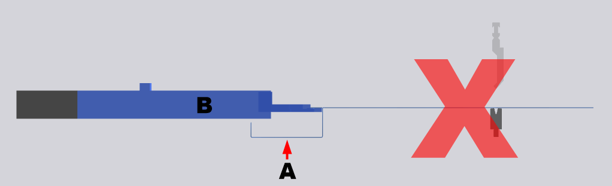

在该对话框中，可针对每一个折弯过程 所需的一个或多个折弯的所有行动或程序被称为折弯过程。进行补偿设置。
- 优势: 增加了折弯 折弯是指配置文件编程要素并且指定工件形状的变化。可以被分配给折弯的一系列属性：边长，折弯角度，折弯半径（可选），初始折弯角度（可选），额外的属性（可选）。折弯可包括若干折弯过程。过程的精度。
- 劣势: 可能显著增加折弯零件所花费的时间。
NOTE: 如果补偿已自动分配，则这些设置将被覆盖。
如果相关选项已在管理员中禁用，则这些选项仅适用于以下机床：
- Xpert:静态以及动态凸面加工可用。
- Xact:仅静态凸面加工可用。
料板厚度补偿
在此区域中的设置定义了如何实现板材厚度变化补偿。
- 关
- 开
- 接受
板材厚度补偿针对选定的过程被禁用。
板材厚度补偿针对选定的过程被启用。
板材厚度补偿模具接受在采用过程选项中指定的过程中获得的测量值。
定义过程，从该过程中针对选定的过程接受了测量的补偿值。
NOTE: 仅可选择模式选项设置为打开的过程。
- 默认
- 永不停止
-
CAUTION:
碰撞风险
切勿针对在后定规挡块 (B)下部的折弯侧(A)使用该选项。侧面可能与后定规挡块相撞，要么将该部分拉回来，要么将其折弯。
Fig.: 后定规挡块下部的折弯侧。

这是冲杆行为的默认值。
如果回缩 回缩是指是后定规臂必须向后运动，以避免折弯部分的后定规挡块与折弯零件发生碰撞。一旦折弯零件在上模和下模之间夹紧，将执行回缩。已编程，冲杆暂停在夹紧点并且在折弯动作之前缩回后挡规。
如果回缩已编程，板材厚度的测量针对选定的过程可能会失败。在这种情况下使用永不停止属性。
如果回缩已编程，冲杆将不暂停在夹紧点上，以确保可针对补偿测量板材厚度。回缩仍然进行！
挠度补偿 可以追溯到在折弯过程中上模和下模挠度的偏差补偿系统。
Attention! 在Xpert机床上，采用自动功能可将静态凸面加工 选项重置为动态凸面加工的默认设置。
- 静态
- 动态
计算压力并且在压紧力的基础上设置。
当冲杆离开UDC时压力已激活并且继续施加，直至折弯操作结束。
CNC自动调整压力。压紧力越大，针对挠度补偿所形成的压力就越大。挠度补偿压力从夹紧点保持到折弯操作结束。